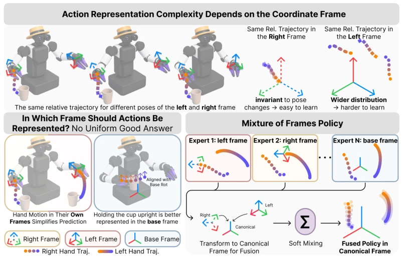
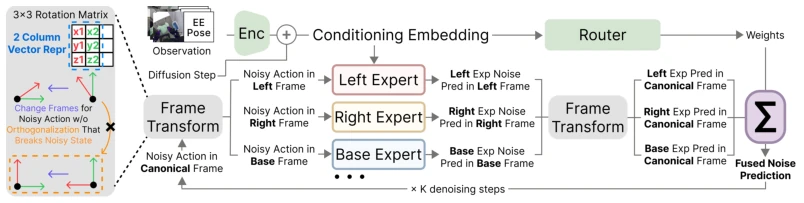
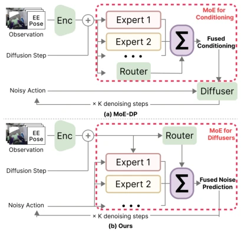
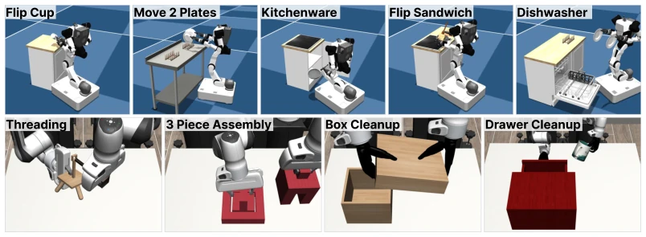
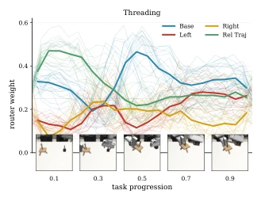
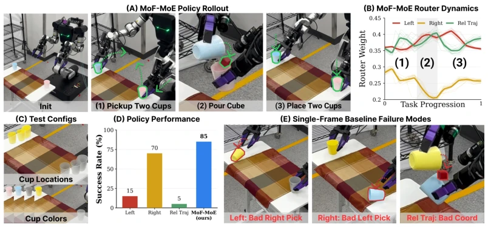
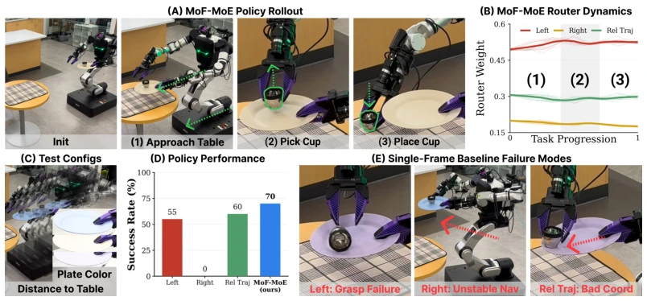
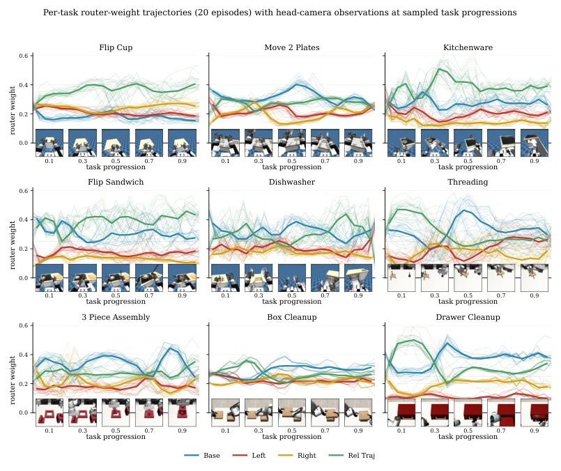
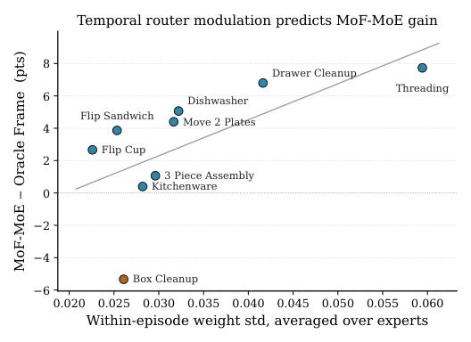

The Stanford team did not resort to superficial measures this time; they directly exposed the pain points of diffusion policies: forcing a single-frame representation is akin to excessively constraining the action distribution, leading to artificially inflated learning difficulty. MoF employs multi-frame expert fusion; although it sounds like a variant of MoE, it directly performs coordinate transformations within the action space, utilizing the invariance of different frames to simplify the distribution. However, relying on preset frame sets and "black box" routers remains somewhat traditional; it would be highly advantageous if it could automatically discover frames. Performance is strong in simulation and stable on real robots, but VLA scalability is questionable, as small models are currently running, and routers are supervised solely by denoising loss, which may not correspond to execution quality.
Existing diffusion policies [1] typically fix a single action frame (such as world frame or end-effector frame), but this ignores the inherent multi-frame nature of manipulation tasks. For example, grasping suits end-effector frames, while transport suits base frames. Forcing a single frame leads to distribution complexity and learning difficulty. Although MoE [21, 22] is used for skill decomposition, MoE-DP in [29] only introduces experts in conditional paths, with action denoising still in a single frame. Multi-frame reasoning has been explored in point cloud policies [2], but remains a blank in modern visual-motion diffusion policies.

Figure 1: Mixture of Frames Policy (MoF). The complexity of a manipulation action distribution depends strongly on the coordinate frame in which it is represented. The same relative motion can be compact and invariant in one frame (e.g. an end-effector frame), yet form a broader and harder-to-learn distribution in another. Conversely, some motions, such as keeping an object upright, are better represented in a base-aligned frame. Since no single frame is universally optimal, MoF trains frame-specialized experts and fuses their predictions in a shared canonical frame.
方法Method
MoF 维护一个规范帧（canonical frame）的扩散轨迹。每一步将噪声动作重表达为多个专家帧（如左/右末端、基座），各专家预测噪声后转回规范帧融合。核心创新是列向量 SE(3) 表示，允许对噪声旋转直接做线性变换，无需正交化投影，保证状态一致性。融合方式支持路由器加权或均匀集成。训练时通过辅助损失稳定弱权重专家。具体而言，规范帧存储调度状态，专家帧利用刚体变换重表达噪声样本，预测噪声再逆变换回规范帧加权求和。这种同步更新避免了多模态分布下的模式不匹配问题，且无需修改标准 DDIM 采样器。此外，列向量表示使得噪声状态在帧间变换时保持线性，解决了传统 6D 旋转表示在噪声状态下无法直接变换的难题。
MoF maintains a diffusion trajectory of a canonical frame. At each step, noisy actions are re-expressed as multiple expert frames (e.g., left/right end-effector, base); each expert predicts noise then transforms back to the canonical frame for fusion. The core innovation is the column vector SE(3) representation, which allows direct linear transformation of noisy rotation without orthogonalization projection, ensuring state consistency. The fusion method supports router weighting or uniform integration. During training, auxiliary loss stabilizes weak-weight experts. Specifically, the canonical frame stores the scheduled state, expert frames use rigid transformation to re-express noise samples, predict noise, then inverse transform back to the canonical frame for weighted summation. This synchronous update avoids mode mismatch problems under multi-modal distributions and requires no modification to the standard DDIM sampler. Additionally, the column vector representation keeps the noise state linear during transformation between frames, solving the difficulty that traditional 6D rotation representations cannot be directly transformed under noise states.

Figure 2: MoF Architecture. At each diffusion step, MoF maintains a noisy action in the canonical frame. This noisy action is re-expressed in each expert’s frame, and all experts predict noise in their native frame. The predicted noise vectors are then transformed back to the canonical frame and fused using either router-predicted weights or fixed uniform weights. The fused noise prediction is used by a standard denoising step, keeping all frame experts synchronized along the same diffusion trajectory. Left: to enable frame change for noisy actions, we employ a column-vector action representation where frame transform can be achieved without orthogonalization, preserving the noisy action state.

Figure 7: Difference Between MoE-DP and Our Method. (a) MoE-DP introduces mixture-of- experts structure in the conditioning pathway, but the diffusion process still denoises actions in a single action representation. (b) MoF instead places the mixture structure directly over frame- specialized denoisers: each expert denoises the same underlying action state expressed in a different coordinate frame. Thus, MoF performs mixture-of-experts reasoning over action frames rather than over conditioning features.
Tested on 9 two-finger mobile manipulation tasks in BiGym and DexMimicGen, plus 2 real-world tasks. The metric is success rate. Compared against single-frame baseline, Oracle frame selection, and MoE-DP. MoF-MoE average success rate 66.8%, outperforming Oracle's 63.8% and single-frame integration. Ablation studies show the column vector representation is crucial (orthogonalization leads to performance collapse). Router analysis indicates automatic frame switching at different stages (e.g., threading task switches from local to global). In real-world tasks, MoF significantly reduces specific stage failures of the single-frame baseline, such as the base frame being superior in the pouring stage for the pouring task.

Figure 3: Simulation Tasks. Nine tasks from BiGym [37] (top) and DexMimicGen [38] (bottom).

Figure 4: Router Weight Trajectories on Threading. For each of the four MoF-MoE experts, faint lines show the per-episode router weight as a function of task progression, and bold lines show the 20-episode mean.

Figure 5: Pouring Task. (a) Our MoF policy rollout, (b) average router weights across successful rollouts relative to task progression, (c) evaluation configurations with different cup locations and color combinations, (d) overall performance, and (e) failure cases of each single-frame baseline.

Figure 6: Serving Task. (a) Our MoF policy rollout, (b) average router weights across successful rollouts relative to task progression, (c) evaluation configurations with varying table distances and seen/unseen plate colors, (d) overall performance, and (e) failure cases of each single-frame baseline.

Figure 8: Router weight trajectories for all nine tasks (20 demonstrations each), with camera observations at sampled task progressions. For each task, faint lines show the per-episode router weight for each of the four experts (averaged over the last 4 of 16 denoising steps) versus task progression, and bold lines show the across-episode mean; the dotted line at 0.25 marks the uniform- weight reference. Below each panel, camera observations from the demonstration whose router trajectory is closest to the across-episode mean are shown at task progressions 0.1, 0.3, 0.5, 0.7, 0.9.

Figure 9: Router modulation amplitude vs. MoF-MoE advantage over Oracle Frame. Each point is one task. The x-axis is the within-episode standard deviation of each expert’s binned-mean weight, averaged over the four experts. The y-axis is the difference between MoF-MoE’s and Oracle Frame’s last-5 success rate. The orange marker (Box Cleanup) is the only task where MoF-MoE underperforms Oracle Frame and is also the task with the smallest router modulation amplitude. Spearman ρ = +0.75, p = 0.020, n = 9.